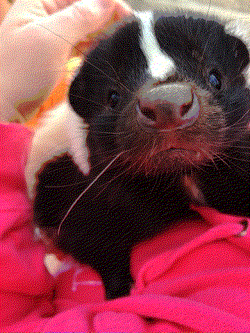
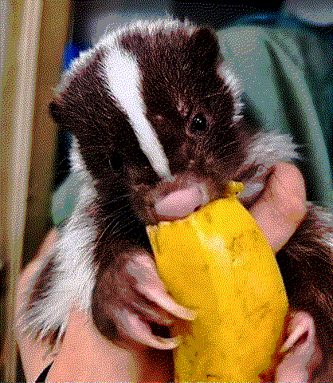
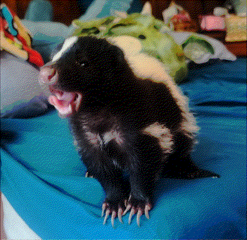
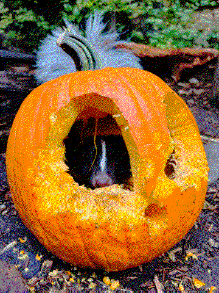

Questions
you probably didn't have!
I still don't know what this website is...
My cryptic message wasn't enough??? Dang, okay. Well to be blunt, this is just my place to express myself. I personally don't use large social media platforms for it is far too distracting in my life. However, as a creator of things™, I still want to share to all of to the world somehow. So this website exists to be both simultaneously my canvas and museum. You are the customer of my incorporated mind, so thank you.
What is "KoasterFunk"???
My online alias is "Koaster," so the first part is me! For the "Funk" part, that has multiple meanings. I would like to say that means there's just a bunch of funk and junk here to explore. That is true!
However, the reality is that "KoasterFunk" is my current FULL online alias. In the past, I was "Koasterkid" and then "KoasterSkunk." I decided I wanted to rebrand, and chose the word "Funk" for it was one of my favorite music styles AND it rhymed the "Skunk." So that's the real reason...
Um, what's your favorite animal?



